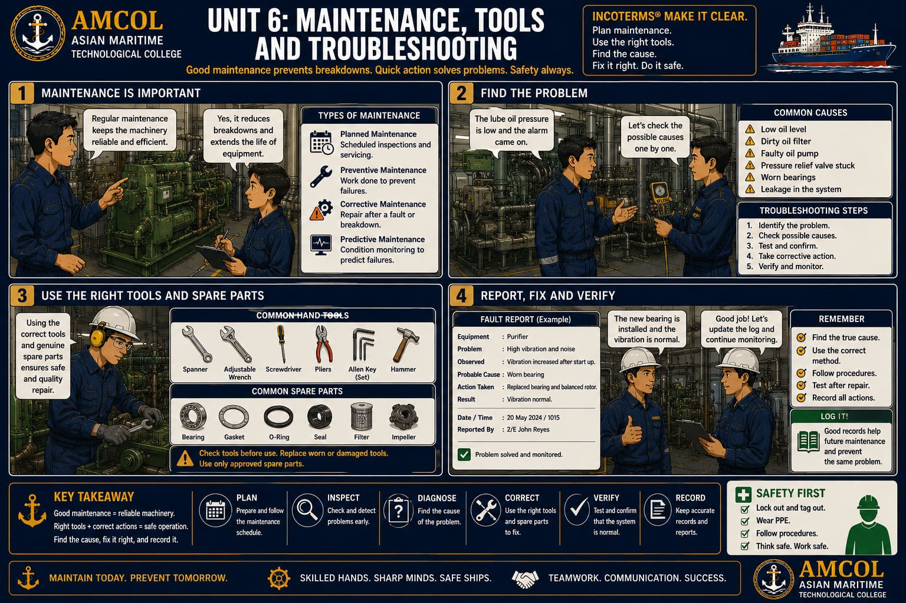

Core Feature & Scenario
Apply technical language to a realistic operational problem.
Alarm, Prepare, Change Over, Verify
Study the sequence, then solve the scenario using the same communication cycle.
{kind=link}

Open comic scenarioTurn on Thai Assist in the top bar. Compact “ไทย” buttons appear beside selected explanations and provide supporting Thai notes while the English lesson remains the main learning language.
Operational Scenario
During evening operations, generator No. 2 shows a high cooling-water temperature alarm. Shortly afterward, its load fluctuates and the standby generator is not in automatic mode. The duty engineer must prepare another generator, communicate electrical values, avoid an uncontrolled blackout, and report why a reset must not be attempted before checking the cause.
Required Communication Sequence
- Acknowledge the alarm and state the exact generator and parameter.
- Prepare standby power before unloading the affected generator.
- Read back switching instructions and report voltage/frequency/load.
- Confirm fault clearance before reset and return to automatic mode.
Student Roles
| Role | Communication responsibility |
|---|---|
| Duty Engineer | Controls the operation, gives instructions, checks safety, and reports to senior officers. |
| Engine Cadet / Rating | Observes equipment, repeats instructions, performs assigned actions, and reports results. |
| Bridge / Chief Engineer | Receives status information, gives priorities, and approves major operational decisions. |
Scenario Questions
- What is the first fact that must be reported?
- Which equipment identity, location, and reading must be included?
- What immediate action is required?
- Which instruction requires a read-back?
- What information must be reported after the action?
- What should be recorded in the logbook or maintenance record?
Model Response Framework
Initial report: “Engine control room, lower platform. [equipment] is showing [condition/reading].”
Action: “I am [approved action]. [standby equipment] is ready.”
Update: “Action completed. [new reading/status]. No further abnormality observed.”